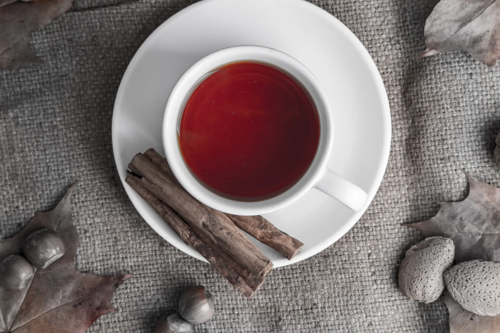
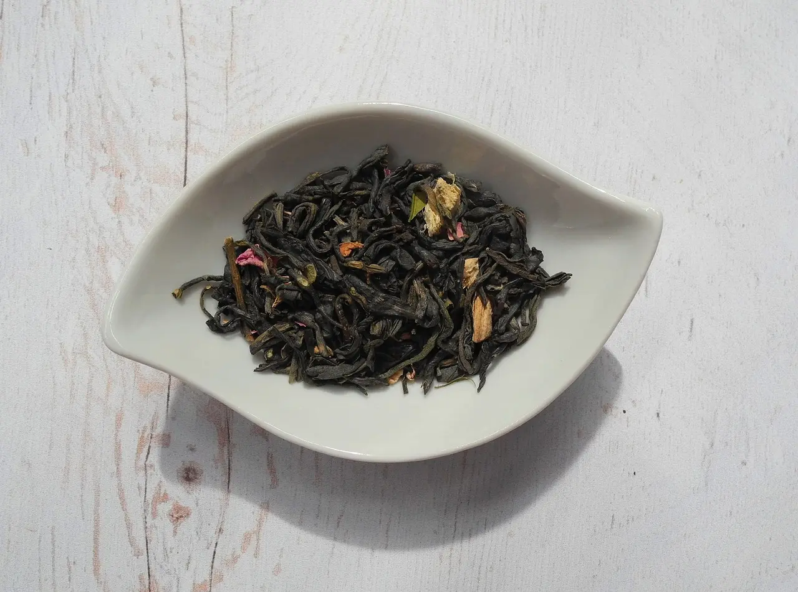
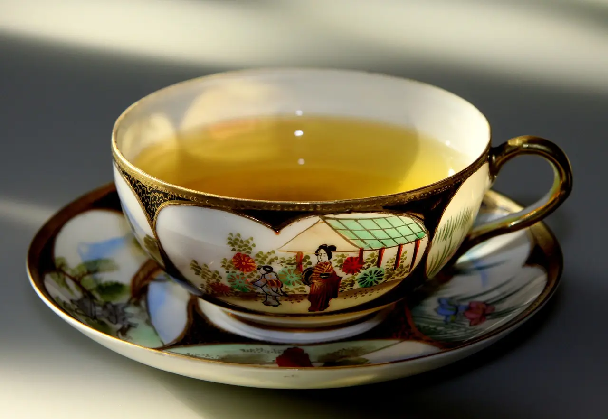

The Rarest and Exotic Tea Types on the Planet
There are many different types of tea available all around the world. Among all of them there are a few of them that are considered the rarest, mainly because there are only a few of them available and the other reason being that they only can be found in unique seasons. The Tea Types that are difficult to find are the ones that are usually the expensive and premium ones. Here are some of the rarest and exotic teas that can be only found in some places on the planet.

-
Da Hong Pao Oolong Tea
At this stage the leaves are put onto long tables which contain a mesh that would often have a ventilation system built beneath itself. Since most of the young tea leaves have some moisture in it, the ventilation system would reduce the moisture by about 60%. Withering is considered to be of the critical stages.

-

Great White Grape Tea
At this stage the leaves are put onto long tables which contain a mesh that would often have a ventilation system built beneath itself. Since most of the young tea leaves have some moisture in it, the ventilation system would reduce the moisture by about 60%. Withering is considered to be of the critical stages.
-

Assam Mangalam Black Tea
At this stage the leaves are put onto long tables which contain a mesh that would often have a ventilation system built beneath itself. Since most of the young tea leaves have some moisture in it, the ventilation system would reduce the moisture by about 60%. Withering is considered to be of the critical stages.
-

Drum Mountain White Cloud Tea
At this stage the leaves are put onto long tables which contain a mesh that would often have a ventilation system built beneath itself. Since most of the young tea leaves have some moisture in it, the ventilation system would reduce the moisture by about 60%. Withering is considered to be of the critical stages.